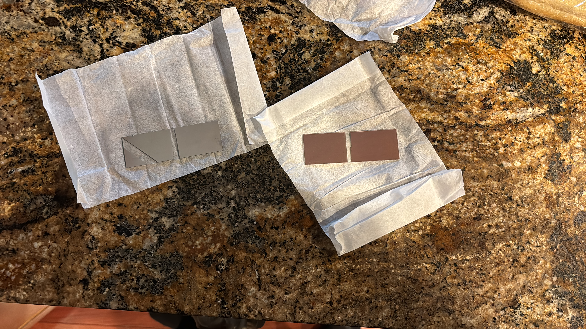

Colin Sauder
About Me Projects ResumeSo mines makes physics undergrads (and most undergrads) take field session, a sort of physics best hits of industry and lab work which includes some laser stuff, vacuum stuff, electronic stuff, computing stuff, and other stuff Im probably forgetting. Mines makes you take it the summer after their sophomore year. Because god hates transfer students I had to take it the summer after my junior year. I did get to make a couple of cool projects out of it though so I figured I'd put them here.
The coolest project was probably during the electronics section where they told us to go wild and just make a project. So I decided to make a spark gap transmitter.
The basic idea is that when you have a high enough voltage difference between two wires so that it sparks, that spark will let off a lot of EM radiation in the form of radio waves which can be picked up by just a piece of wire. Back in WW1 days and before this was the first form of wireless communication.
I got a 15 v spark emitter from the TA but I just got not consistently pick up radio waves from it. I also managed to melt the thing while testing. I went back to the TA, he sighed and said “Im going to give you something you have to promise to be very careful with” and then handed me this
That my friends is a 2 kilovolt spark generator. With this beast I could certainly get a signal out of it, and after running through a low and high pass filter and with some labview code I got this.
Video does not work, Im trying.
Other than that there was other cool stuff, Got to plate some slides with silver and copper in the clean room (note to self: shave before going into the clean room so you don't have to wear a beard net)
Also got to go to the national ice core storage facility where they keep all the ice cores they drill from antartica at like -40 F.